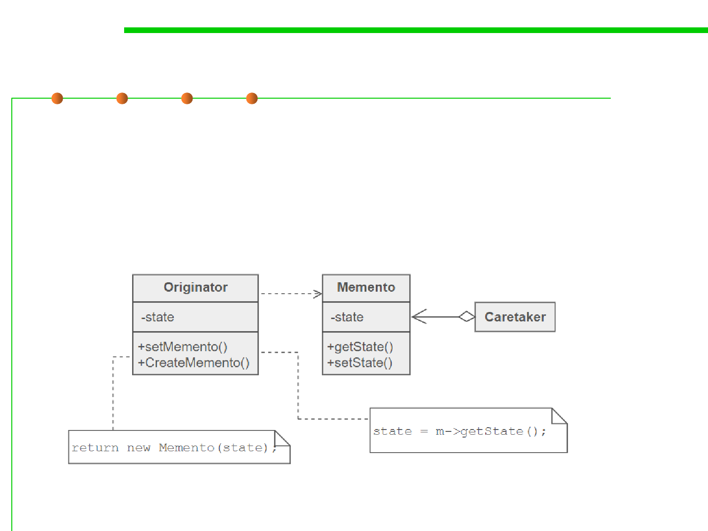

Memento Pattern
6.3 Maintainability-Oriented Construction Techniques
▪ Memento design pattern defines three distinct roles:
– Memento 备忘录- the lock box that is written and read by the Originator,
and shepherded by the Caretaker.
• stores internal state of the Originator object.
• protects against access by objects other than the originator.